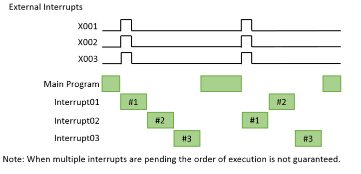
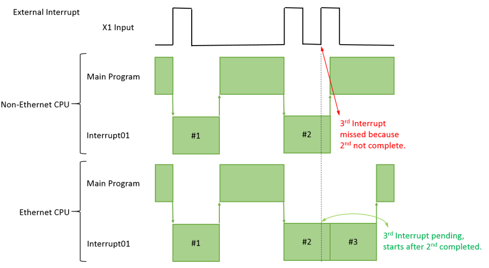
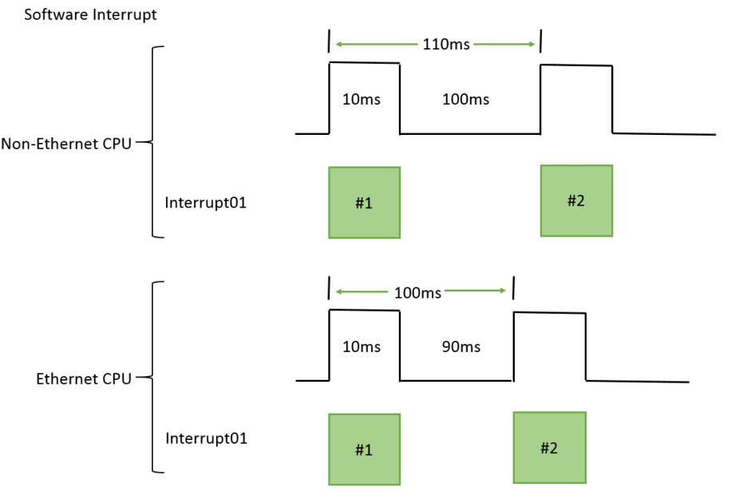

Topic: CL230

| Using Interrupt Programs |
Topic: CL230
|
Interrupt Programs can be executed for several purposes:
• Software Interrupts, executed at a preset time interval
• External Interrupt, a built-in Input rising or falling
• High Speed Inputs, each mode has different methods of using Interrupts
Although Interrupts are triggered at high speed, they still must execute serially. The Main Program Scan (including any Called Subroutines) are paused during the execution of the Interrupts. All Interrupts must be completed before the Main Program Scan can resume. If your application requires low interrupt latency then you should limit the number and length of Interrupt Programs.
Main Program, FOR/NEXT loops, Called Subroutine Programs, and Interrupt Programs all take time to execute. A logic scan might contain only the Main Program, or all of the ladder items listed above. An Interrupt can execute multiple times during a single scan. If the logic scan does not reach the END statement within the Watch Dog Timer (200ms by default) a critical fault is indicated and the PLC will transition to STOP with an Error. For this reason, Interrupt Programs should be kept as short as possible. See Topic CL061 for more information about the Watch Dog Timer.
When more than 1 interrupt is triggered at the same time the Interrupt Programs will each run serially. The order of execution is not guaranteed.

When an External Interrupt is retriggered before the Interrupt Program has completed, the behavior is different for Non-Ethernet CPU’s and Ethernet CPU’s. In the following timing diagram the Non-Ethernet CPU will miss the 3rd rising edge because the 2nd Interrupt Program is not complete. But the Ethernet CPU will queue the 3rd and execute the Interrupt Program as soon as possible.

The timing of Software Interrupts is different between Non-Ethernet CPUs and Ethernet CPUs. In Non-Ethernet CPU’s the Interval Time does not include the execution time of the Interrupt Program. So the actual Interval Time will always be longer than the configured Interval Time. In Ethernet CPU’s the actual Interval Time will be the configured Interval Time. The timing example here shows an Interrupt Program which takes 10ms to complete. The Non-Ethernet CPU will execute this Interrupt every (100ms+10ms) = 110ms. The Ethernet CPU will execute this Interrupt every 100ms.

CPU Built-in
I/O Setup: Output Tab (Basic and Standard CPU)
CPU Built-in I/O Setup: General Tab (Basic and Standard CPU)
Example: Making the Preset Table Values Retentive